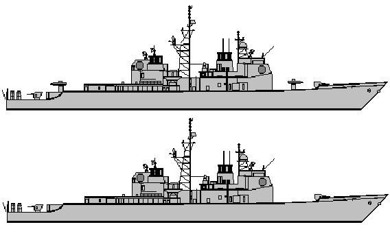

| Hillock Earth Federation Navy Destroyer |
|
|  | |
General and Technical Data |
|
|
Unit type: destroyer Operator: Earth Federation Navy Dimensions: overall length 171 meters, overall width 16 meters Weight: 7103 tons empty, 9957 tons maximum Powerplant: 4 x P&W Roice gas turbine, 80,000 shaft horsepower Propulsion: 2 x screw, 4 blades each Performance: cruising speed 28 knots, maximum speed 33 knots Hangar capacity: 1 infantry; 2 aircraft Launch catapults: 0 Armaments: 2 x 130mm cannon; 2 x 61-tube multipurpose vertical launch missile system; 2 x 4-tube missile launcher; 4 x antiground machine gun; 4 x antiaircraft machine gun; 2 x 3-tube torpedo launcher |
 RPG quick stats sheet
RPG quick stats sheet | Technical and Historical Notes | |
|
A product of the 40's Rearmament Program, the EF Navy's Hillock-class escort vessel is a complementary warship to the Himalaya-class aircraft carrier. Intended to roll-up the capabilities of existing frigates, destroyers and cruisers into one standardized pattern, the Hillock provides adequate faculties for surface-to-air, surface-to-surface and antisubmarine warfare operations.
As with the Himalaya, the Hillock is festooned with a variety of aerials, antennae and sophisticated radar assemblies, but these are of unfortunately little use under Minovski particle combat conditions. A small hangar directly in front of the rear missile systems has space for two VTOL-capable aircraft. Though its highly-advanced cruise missiles are also inapplicable, even firing unguided warheads the vessel offers a considerable punch in the form of twin vertical launch systems capable of putting over ten dozen warheads into the air. Heavy missile tubes are mounted at the rear of the hull, and a pair of lightweight, rapid-firing 130mm cannons provide for short-to-medium range bombardment and defense against large targets. A variety of machine guns are positioned for close-in defense against small surface vessels, aircraft and helicopters, but are mostly noisemakers as far as mobile suit-sized targets are concerned. |
|